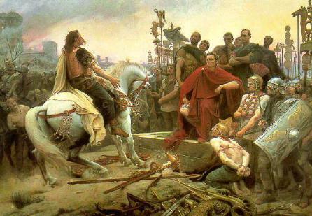

| |
Battle of Alesia
Battle of Alesia also called as Siege of Alesia took place in september 52 BC at Alise-Sainte-Reine (France).The Battle was faught by an army of Roman Republic led by Julius Caesar,helped by Mark Antony,Titus Labienus and Gaius Trebonius, against Gallic tribes which were led by Vercingetorix of Arverni.The strength of Julius Caesar was 60000 with 12 legions with cavalry and auxiliaries which faught against 180,000-330,000 with 120,000 relief forces of Vercingetorix.The Result of the battle was Roman Victory with around 13000 people killed from Romans as camerd to 50,000 to 90,000 killed of Vercingetorix.The Siege of Alesia was Julius Caesar greatest military acheivement.The battle of Alesia can safely be described as marking the end of Celtic dominance in France, Belgium, Switzerland and Northern ItalyAfter the Roman victory ,Gaul was subdued and became a Roman Province.

Battle of Alesia
For
more information please visit :
More Information about the Battle of Alesia from wikipedia
| | |
|